“Construct - Construction Business Wordpress Theme ” Documentation by “QKTheme Team”
“Construct - Construction Business Wordpress Theme ”
Thank you for purchasing my theme. If you have any questions that are beyond the scope of this help file, please feel free to post your questions on my support forum at http://qkthemes-demo.com/. Thanks so much!
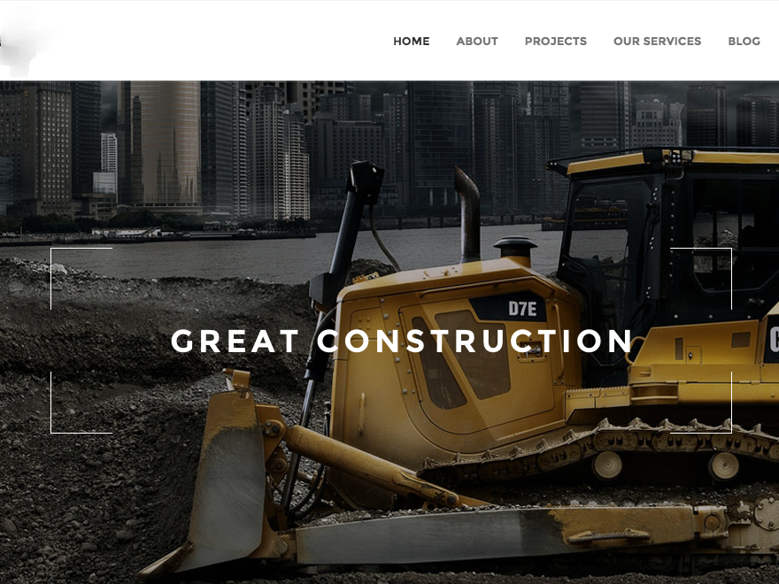
Table of Contents
- Theme Installation
- Install Recommended Plugins
- Contact Form 7
- revslider
- How to Import Files
- Theme Options
- How to Setup Menu
- Sidebars and Widgets
- How to use Visual Composer
- Requesting Support
- Sources & Credits
- Version History
A) Installation - top
Tip: Before uploading the theme make sure you unzip the theme download and inside of the download folder upload the zip called “construct.zip”
To install this theme you must have a working version of WordPress already installed. For information in regard to installing the WordPress platform, please see the WordPress Codex – http://codex.wordpress.org/Installing_WordPress
Installation
When you are ready to install a theme, you must first upload the theme files and then activate the theme itself. The theme files can be uploaded in two ways:
- FTP Upload: Using your FTP program, upload the non-zipped theme folder (construct) into the /wp-content/themes/ folder on your server.
- WordPress Upload: Navigate to Appearance > Add New Themes > Upload. Go to browse, and select the zipped theme folder. Hit “Install Now” and the theme will be uploaded and installed.
Once the theme is uploaded, you need to activate it. Go to Appearance > Themes and activate your chosen theme.
B) Install Recommended Plugins - top
The construct WordPress theme comes with custom and powerful plugins.After active construct Theme you can see a message and click to link to install all recomend plugins.
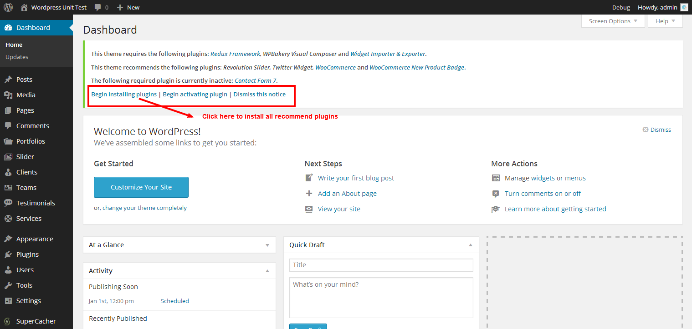
Just another contact form plugin. Simple but flexible. After installation this plugin please read how to use from CONTACT PAGE SETUP below.
B-1) Revolution Slider - top
If would you like to use Revolution slider like my demo please go to Revolution Sliders menu on your WordPress admin dashboard then click Import Slider.
And chose home.zip file from "import\revslider" folder and click "Import Slider"
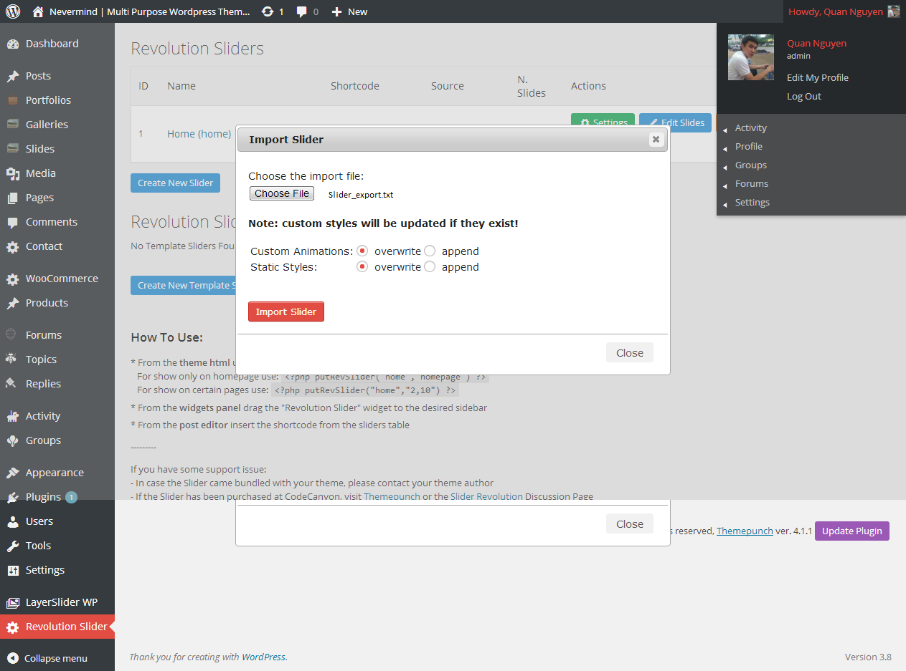
C) Theme Options - top
This theme comes with super awesome theme options panel. To access this panel you would log into your WordPress dashboard and browse to Wp-admin → Construct Options
Options Overview
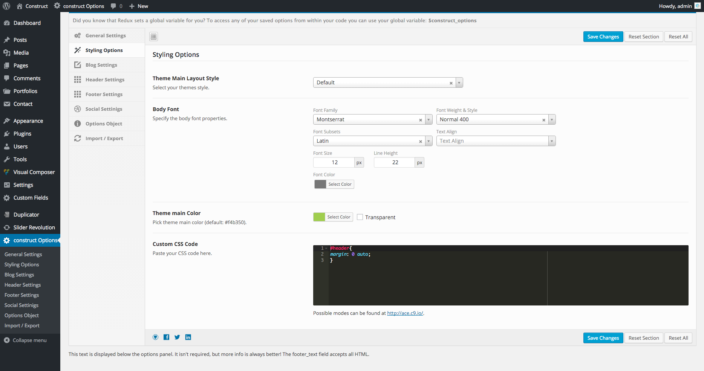
C) How to Import Files - top
You can go to "Wp-admin area => Appearance => Import Demo data" and click to “import” button and wait to import our demo
After installation import files, your menu dosen't work like my demo site. You should go to Appearance >> Menus >> Manage Locations then select Assigned Menu >> Menu and save changes.Please see below image;
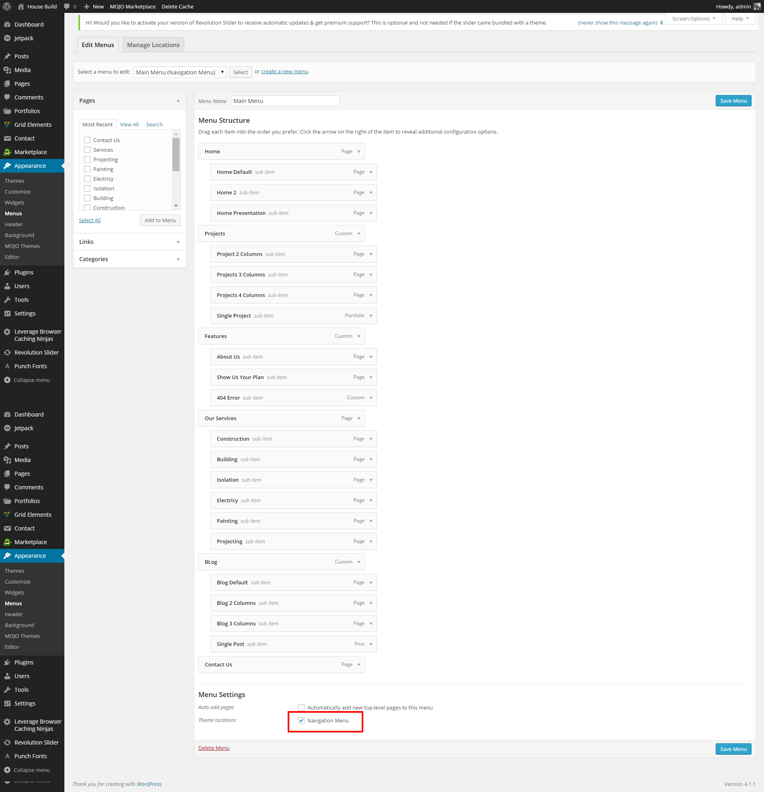
Go to "Theme Options -> Styling Options -> Theme Stylesheet" to slect Main Menu Style ( Horizontal or Vertical style)
construct WordPress theme includes a widgetized sidebar and lots of styled widgets for you to pick from. Standard widgets (like the custom menu and tags) have been styled to match the clean style of the theme.
Adding Widgets
To select a widget, just drag and drop the widget from the "Available Widgets" area to the Sidebar area/order you want it in. If there are any widgets you have saved settings for that you don't want to use right now but might want to in the future you can drop them in the "Inactive Widgets" section for later use.
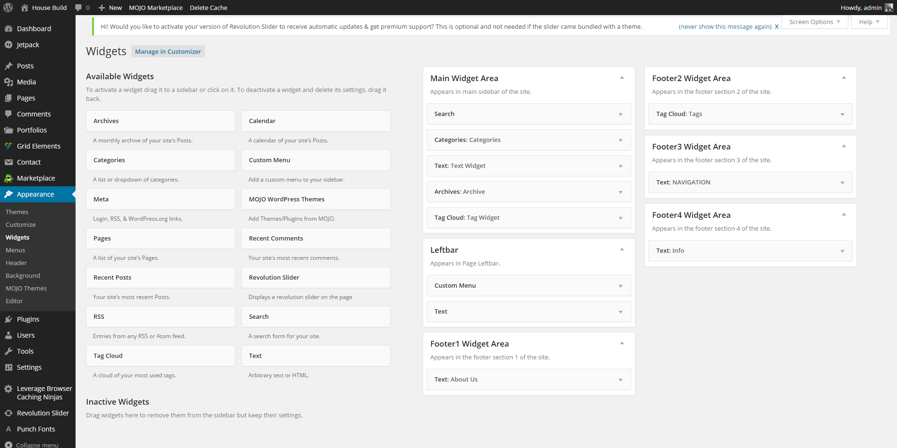
G) Visual Shortcodes? - top
This theme come with Visual composer Plugin and many custom construct
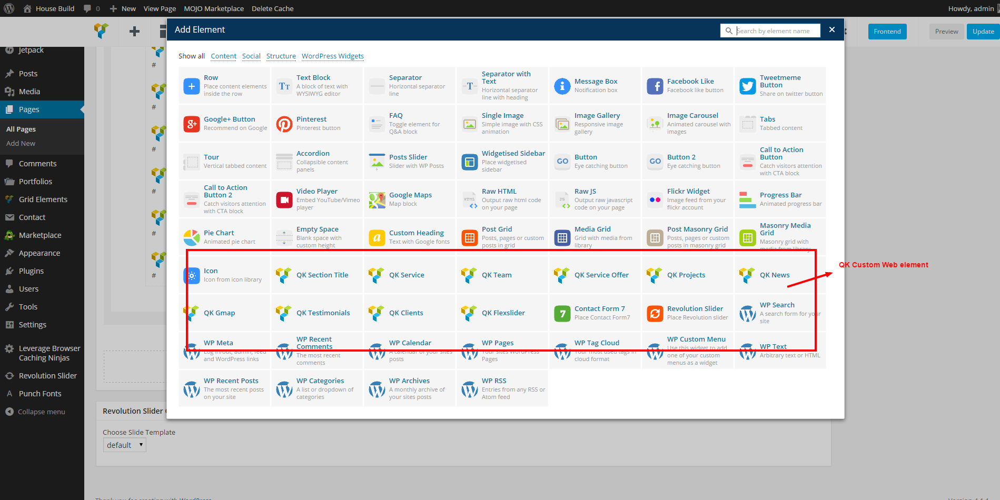
Example Hopage in Backend:
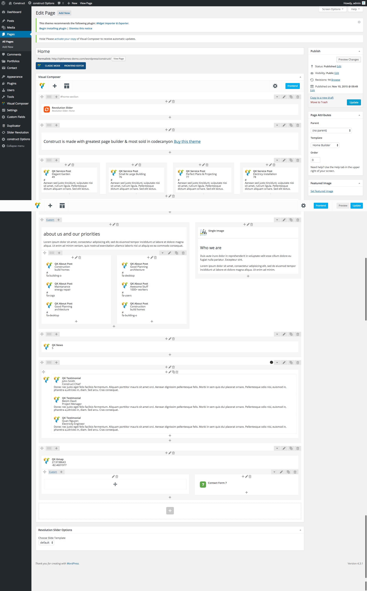
Remember Config Visual Composer
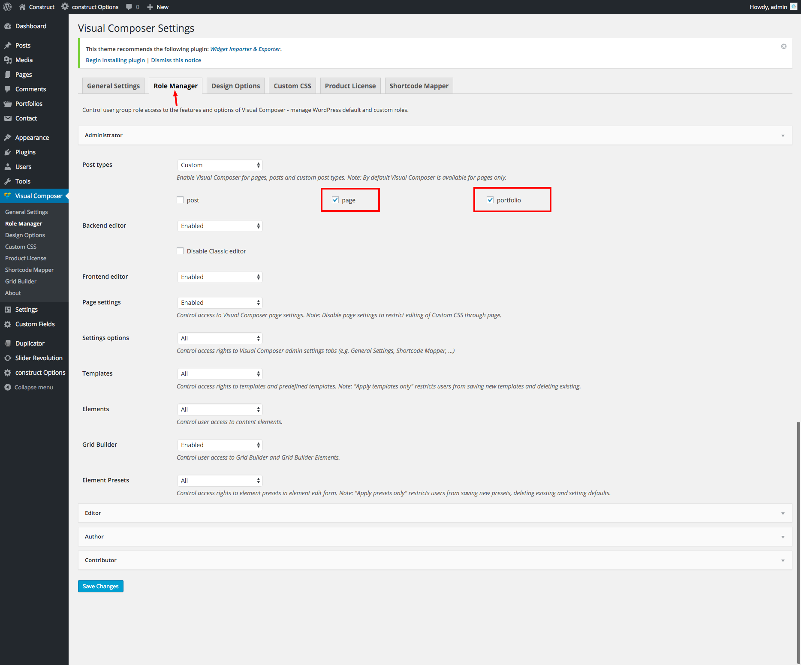
H) Page Template - top
construct Wordpress Theme come with 3 Customs Page Template:
- Home Builder - use to create a page like Home Default
Page Fullwidth - use to create Features Page like: About Us...
Page Leftbar - use to create Services Page like: Building, Construction...
Custom Post Type - top
construct Wordpress Theme come with 1 Customs Post Type:
- Portfolio - use to build your Portfolio Archive
Now go to Settings -> Reading select Your home for your fontend
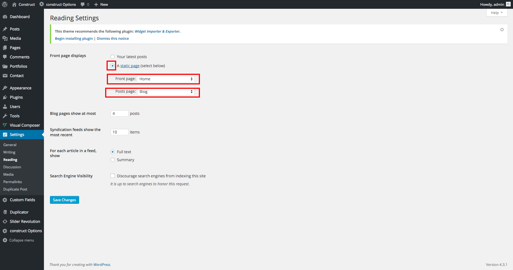
WPML consists of several modules. The basic module turns WordPress sites multilingual. Other modules help with an enhanced translation process, string translation, media translation and other functions.
You can learn about the different modules in the WPML Core and Addons page.
After you enable WPML, you’ll see a Multilingual Widget in the Admin Dashboard. This widget provides access to the different functions in WPML. You can also access them through the WPML menu.
- Languages – Determine the site’s languages and control how different language contents are organized.
- Theme and plugins localization – Choose between the traditional .mo files or using WPML’s String Translation.
- Navigation – Control the appearance of site-wide navigation based on WordPress pages.
- Sticky links – This is an essential function for running full websites with WordPress. It guarantees that links between pages can never break.
Translating Site Content
WPML creates different posts, pages and custom types for translations and connects them together. This means that every page has its own title, body and meta-fields.
WPML offers two ways for translating content:
- Manually, by clicking on the + icons
- Using WPML’s Translation Management module
Translation Dashboard
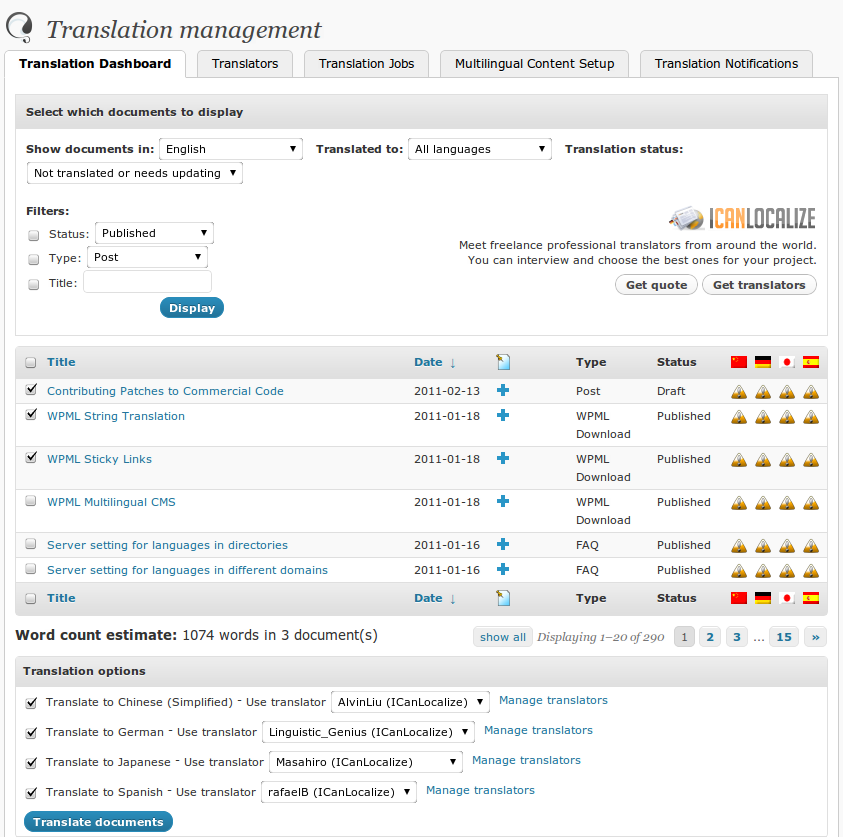
Learn how to translate posts, pages and custom data types in - translating your content. You can also translate post categories and custom taxonomies.
Most WordPress sites contain texts outside of posts. WPML translates these texts using the String Translation module.
To display image galleries in translated content, you should use WPML Media. It will allow you to connect the same media files to content in different languages.
Advanced Translation
Once you’ve translated the site’s content and general strings, you might be interested in translating the site’s navigation and using localized permalinks.
Learn more about:
M) Requesting Support - top
Please remember you have purchased a very affordable theme and you have not paid for a full-time web design agency. Occasionally we will help with small tweaks, but these requests will be put on a lower priority due to their nature.
Support is also 100% optional and we provide it for your connivence, so please be patient, polite and respectful.
Before seeking support, please...
- Make sure your question is a valid Theme Issue and not a customization request.
- Make sure you have read through the documentation and any related video guides before asking support on how to accomplish a task.
- Make sure to double check the theme FAQs.
- Try disabling any active plugins to make sure there isn't a conflict with a plugin. And if there is this way you can let us know.
- If you have customized your theme and now have an issue, back-track to make sure you didn't make a mistake. If you have made changes and can't find the issue, please provide us with your changelog.
- Almost 80% of the time we find that the solution to people's issues can be solved with a simple "Google Search". You might want to try that before seeking support. You might be able to fix the issue yourself much quicker than we can respond to your request.
- Make sure to state the name of the theme you are having issues with when requesting support via Themeforest.
N) Sources & Credits - top
I've used the following images files as listed.
O) Version History - top
When update new version We will notify you via email.
Once again, thank you so much for purchasing this theme. As I said at the beginning, I'd be glad to help you if you have any questions relating to this theme. No guarantees, but I'll do my best to assist. If you have a more general question relating to the themes on ThemeForest, you might consider visiting the forums and asking your question in the "Item Discussion" section.
QKTheme Team
Go To Table of Contents
{kind=link}
{kind=link}
{kind=link}
{kind=link}
{kind=link}
{kind=link}
{kind=link}
{kind=link}
{kind=link}